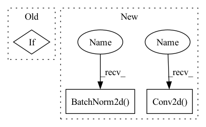

Pattern ID :569

Before Change
norm_layer: Optional[Callable[..., nn.Module]] = None
) -> None:
super(Bottleneck, self).__init__()
if norm_layer is None:
norm_layer = nn.BatchNorm2d
width = int(planes * (base_width / 64.)) * groups
// Both self.conv2 and self.downsample layers downsample the input when stride != 1
self.conv1 = conv1x1(inplanes, width)
After Change
super().__init__()
width_ratio = out_channels / (widen_factor * 64.)
D = cardinality * int(base_width * width_ratio)
self.conv_reduce = nn.Conv2d(
in_channels, D, kernel_size=1, stride=1, padding=0, bias=False)
self.bn_reduce = nn.BatchNorm2d(D, momentum=0.001)
self.conv_conv = nn.Conv2d(D, D,
kernel_size=3, stride=stride, padding=1,
groups=cardinality, bias=False)
self.bn = nn.BatchNorm2d(D, momentum=0.001)
self.act = mish
self.conv_expand = nn.Conv2d(
D, out_channels, kernel_size=1, stride=1, padding=0, bias=False)
self.bn_expand = nn.BatchNorm2d(out_channels, momentum=0.001)
self.shortcut = nn.Sequential()
if in_channels != out_channels:
self.shortcut.add_module("shortcut_conv",
In pattern: SUPERPATTERN
Frequency: 3
Non-data size: 3
Instances
Fragment ID: 1902232
Project Name: ygzwqzd/lamda-ssl
Commit Name: 360768e49da2ff10157493a976817acc85f1ccd5
Time: 2022-01-17
Author: 1129198222@qq.com
File Name: Semi_sklearn/Network/ResNet.py
M Class Name: Bottleneck
N Class Name: ResNeXtBottleneck
M Method Name: __init__(7)
N Method Name: __init__(9)
M Parent Class: nn.Module
N Parent Class: nn.Module
M File Name: Semi_sklearn/Network/ResNet.py
N File Name: Semi_sklearn/Network/ResNet.py
M Start Line: 76
M End Line: 99
N Start Line: 31
N End Line: 68
'>
Before Change
self.downsample = downsample
self.stride = stride
if use_cbam:
self.cbam = CBAM(planes * 4, 16)
else:
self.cbam = None
After Change
if in_channels != out_channels:
self.shortcut.add_module(
"shortcut_conv",
nn.Conv2d(
in_channels,
out_channels,
kernel_size=1,
stride=stride,
padding=0,
bias=False,
),
)
self.shortcut.add_module("shortcut_bn", nn.BatchNorm2d(out_channels))
def forward(self, x):
out = self.conv_reduce.forward(x)
'>
Fragment ID: 1902219
Project Name: pprp/pytorch-cifar-tricks
Commit Name: a5bde002e28a524ddfc6bb60b7cf244daf0ca392
Time: 2021-12-22
Author: 1115957667@qq.com
File Name: model/att_overfit/att_net.py
M Class Name: Bottleneck
N Class Name: Bottleneck
M Method Name: __init__(8)
N Method Name: __init__(6)
M Parent Class: nn.Module
N Parent Class: nn.Module
M File Name: model/att_overfit/att_net.py
N File Name: model/att_overfit/att_net.py
M Start Line: 71
M End Line: 82
N Start Line: 64
N End Line: 111
'>
Before Change
norm_layer: Optional[Callable[..., nn.Module]] = None
) -> None:
super(Bottleneck, self).__init__()
if norm_layer is None:
norm_layer = nn.BatchNorm2d
width = int(planes * (base_width / 64.)) * groups
// Both self.conv2 and self.downsample layers downsample the input when stride != 1
self.conv1 = conv1x1(inplanes, width)
After Change
groups=cardinality, bias=False)
self.bn = nn.BatchNorm2d(D, momentum=0.001)
self.act = mish
self.conv_expand = nn.Conv2d(
D, out_channels, kernel_size=1, stride=1, padding=0, bias=False)
self.bn_expand = nn.BatchNorm2d(out_channels, momentum=0.001)
self.shortcut = nn.Sequential()
if in_channels != out_channels:
self.shortcut.add_module("shortcut_conv",
'>
Fragment ID: 1902228
Project Name: ygzwqzd/lamda-ssl
Commit Name: 360768e49da2ff10157493a976817acc85f1ccd5
Time: 2022-01-17
Author: 1129198222@qq.com
File Name: Semi_sklearn/Network/ResNet.py
M Class Name: Bottleneck
N Class Name: ResNeXtBottleneck
M Method Name: __init__(7)
N Method Name: __init__(9)
M Parent Class: nn.Module
N Parent Class: nn.Module
M File Name: Semi_sklearn/Network/ResNet.py
N File Name: Semi_sklearn/Network/ResNet.py
M Start Line: 76
M End Line: 99
N Start Line: 31
N End Line: 68
'>
Before Change
super(SELayer, self).__init__()
assert squeeze_ratio >= 1
assert inplanes > 0
if size is not None:
self.global_avgpool = nn.AvgPool2d(size)
else:
self.global_avgpool = nn.AdaptiveAvgPool2d(1)
self.conv1 = nn.Conv2d(inplanes, int(inplanes / squeeze_ratio), kernel_size=1, stride=1)
After Change
class DepthwiseSeparableConv(nn.Module):
def __init__(self, in_planes, out_planes, kernel_size, padding, bias=False):
super(DepthwiseSeparableConv, self).__init__()
self.depthwise = nn.Conv2d(in_planes, in_planes, kernel_size=kernel_size, padding=padding, groups=in_planes,
bias=bias)
self.pointwise = nn.Conv2d(in_planes, out_planes, kernel_size=1, bias=bias)
self.bn1 = nn.BatchNorm2d(in_planes)
self.bn2 = nn.BatchNorm2d(out_planes)
self.relu = nn.ReLU()
def forward(self, x):
x = self.depthwise(x)
'>
Fragment ID: 1902212
Project Name: opendr-eu/opendr
Commit Name: 18da6a5d3ed5c2a291cb9c600a9fe4e5e17e5671
Time: 2021-01-26
Author: ptosidis@gmail.com
File Name: src/perception/face_recognition/algorithm/backbone/model_mobilenet.py
M Class Name: SELayer
N Class Name: DepthwiseSeparableConv
M Method Name: __init__(6)
N Method Name: __init__(5)
M Parent Class: nn.Module
N Parent Class: nn.Module
M File Name: src/perception/face_recognition/algorithm/backbone/model_mobilenet.py
N File Name: src/perception/face_recognition/algorithm/backbone/model_mobilenet.py
M Start Line: 153
M End Line: 162
N Start Line: 35
N End Line: 42